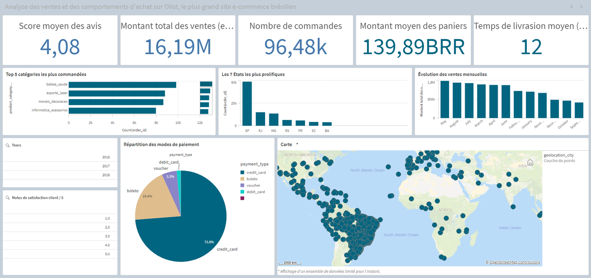

Commandes Olist : du fichier brut au tableau de bord
Olist met en relation des petits vendeurs brésiliens et leurs clients. Le fichier de départ mélangeait commandes, paiements, avis, produits et vendeurs dans une seule table.
- 119 143lignes dans le fichier brut
- 40colonnes au départ
- 73catégories de produits
- 7tables CSV en sortie
Ce que j'ai fait dans le notebook
- Lecture du fichier
sd2_data_olist_project.csvavec pandas et premier tour des colonnes et des types. - Sélection de 33 colonnes utiles, puis filtre sur les commandes au statut
delivered. - Conversion des dates et création de trois variables : délai de livraison en jours, mois d'achat, montant total (prix plus frais de port).
- Premiers graphiques de contrôle avec matplotlib : notes, délais, achats par mois, catégories.
- Découpage en sept tables (clients, commandes, articles, paiements, avis, vendeurs, produits) exportées en CSV pour Qlik Sense.
Où se trouvent les commandes
São Paulo écrase le classement : plus du triple de Rio de Janeiro, qui arrive deuxième.
| São Paulo | 48 816 | |
|---|---|---|
| Rio de Janeiro | 14 963 | |
| Minas Gerais | 13 496 | |
| Rio Grande do Sul | 6 431 | |
| Paraná | 5 894 | |
| Santa Catarina | 4 239 | |
| Bahia | 3 950 |
Combien de temps pour être livré
C'est aussi à São Paulo que les colis arrivent le plus vite. Rio, pourtant deuxième en volume, attend presque deux fois plus longtemps.
| São Paulo | 8,3 j | |
|---|---|---|
| Minas Gerais | 11,5 j | |
| Paraná | 11,5 j | |
| District fédéral | 12,5 j | |
| Santa Catarina | 14,5 j | |
| Rio Grande do Sul | 14,7 j | |
| Rio de Janeiro | 14,8 j |
Le tableau de bord Qlik Sense
Une fois les tables chargées, le tableau de bord résume l'activité : 96,48 milliers de commandes, 16,19 millions de réaux de ventes, un panier moyen de 139,89 réaux, une note moyenne de 4,08 sur 5 et douze jours de livraison en moyenne.
Un détail à connaître sur les avis : la catégorie la mieux notée affiche 5 sur 5, mais avec très peu de commandes. Parmi les vendeurs, c'est pareil. Une moyenne sans le nombre d'avis derrière ne veut pas dire grand-chose.
